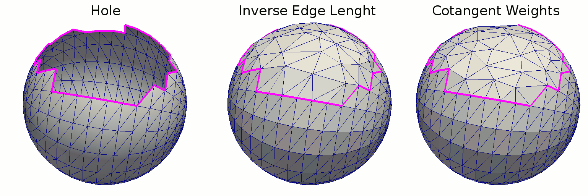

Introduction and licensing
This is a collection of different tools I had to develop. Everything in this repository is licensed under the Attribution-NonCommercial-ShareAlike 4.0 International License.
The collection is in a bit of a disarray and documentation need to be improved.
To do
- Add tests
- Split CommonTools into vtk only and itk/vtk parts
- Doxygen documentation is outdated. Also need to correct the cmake files for the doxygen
Contents of subfolders
BasicMeshoperations
A collection of random tools to use with meshes: mesh converters, mesh smoothers, distance transforms, etc.
DistTransform
Calculates a distance transform on a mesh from a collection of seeds (uses fast marching) The distance is calculated from blobs stored in vtkShortArray associated with the vertices. The distance of the point point_id to the blob blob_id is returned in array "DT" and can be accessed by
array = polydata.GetPointData().GetArray('DT')
tuple = array.GetTuple(point_id)
distance = tuple[blob_id]
Example image (left - DT, right - red blob):
FillSurfaceHoles
Detects and fills holes on the surface. Currently under construction. Current version implements P. Liepa "Filling Holes in Meshes" without smoothing. To be added soon. Here's a sample result

Todo:
- Add smoothing
LVMeshFromMRI
Creates a smoother mesh using splines longitudinally from short axis contours in MRI and a reference point. This was ported from VTK 5.x and needs testing. There's also a python script in Python/mri_mesh_from_contours. The input shape are the landmarks in 3D. One of them is the reference point (which is either the first or the last or has a special ID). Also it is possible that the IDs are used to differentiate between endocardiumn and epicardium. Check the code. Example reconstrautcion:
Example from the MRI corrector (only python)
Todo:
- The code needs a better documentation
- Python script was failing with the new VTK/mayavi
- Compilation fails with vmtk from Ubuntu 16.04 distribution. Need a replacement. For now uniform remeshing is disabled.
VolumetricLVMesh
Generates a volumetric mesh of cardiac Left Ventricle (half-ellipsoid like). The elements are wedges aligned radially. Might have some additional requirements. To be verified. This was ported from VTK 5.x and needs testing. An example mesh with associate local coordinates can be seen in the following figure
Todo:
- Test
layer_Generation_code
Generates a volumetric mesh of any structure with two boundaries. The elements are wedges aligned radially. This was ported from VTK 5.x and needs testing.
Todo:
- Test
Python
Some programs written in python. In particular mesh flattening.
IrisTools
A couple of internal use tools. Probably irrelevant for anyone except myself.